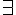
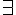
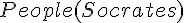
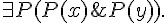
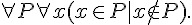

邏輯推論與專家系統
布林邏輯
在布林邏輯中，只有用來代表真假值的簡單變數，像是 A, B, C, X, Y, Z .... 等，所以邏輯算式看來通常如下：
- P & (P=>Q) => Q.
- A & B & C => D | E.
- -(A & B) <=> -A | -B.
這種布林命題邏輯裏沒有函數的概念，只有簡單的命題 (Proposition)，因此布林邏輯也稱為命題邏輯 (Propositional Logic)。
謂詞邏輯
而在謂詞邏輯裏，則有「布林函數」的概念，因此其表達能力較強，例如以下是一些謂詞邏輯的範例。
- Parent(x,y) <= Father(x,y).
- Parent(John, Johnson).
- Ancestor(x,y) <= Parent(x,y).
- Ancestor(x,y) <= Ancestor(x,z) & Parent(z,y).
您可以看到在這種邏輯系統裏，有「布林變數」的概念 (像是 x, y, z 等等)，也有函數的概念，像是 Parent(), Father(), Ancestor() 等等。
一階邏輯
在上述這種謂詞邏輯系統中，如果我們加上  (對於所有) 或  (存在) 這兩個變數限定符號，而其中的謂詞不可以是變項，而必須要是常項，這種邏輯就稱為一階邏輯。
(對於所有) 或  (存在) 這兩個變數限定符號，而其中的謂詞不可以是變項，而必須要是常項，這種邏輯就稱為一階邏輯。
 ; 人都是會死的。
; 人都是會死的。-  ; 蘇格拉底是人。
 ; 蘇格拉底會死。
; 蘇格拉底會死。
當然、規則可以更複雜，像是以下這個範例，就說明了「存在一些人可以永遠被欺騙」。

二階邏輯
如果一階邏輯中的謂詞，放寬成可以是變項的話 (這些變項可以加上 與  等符號的約束)，那就變成了二階邏輯，以下是一些二階邏輯的規則範例。
等符號的約束)，那就變成了二階邏輯，以下是一些二階邏輯的規則範例。
- 
- 
 ; 數學歸納法。
; 數學歸納法。
專家系統
透過邏輯推論的方式，我們很容易就可以建構出一種「問題-回答」系統，這種系統會根據邏輯規則進行推論，讓您透過對話的方式得到問題的答案，以下是一個「動物分類專家系統」的範例。
動物世界規則庫 : animal.kb
哺乳類 <= 有毛.
哺乳類 <= 泌乳.
鳥類 <= 有羽毛.
鳥類 <= 會飛 & 生蛋.
食肉類 <= 哺乳類 & 吃肉.
食肉類 <= 有爪 & 利齒 & 兩眼前視.
有蹄類 <= 哺乳類 & 有蹄.
偶蹄類 <= 哺乳類 & 反芻.
獵豹 <= 哺乳類 & 吃肉 & 斑點.
老虎 <= 哺乳類 & 吃肉 & 條紋.
長頸鹿 <= 有蹄類 & 長腿 & 斑點.
斑馬 <= 有蹄類 & 條紋.
鴕鳥 <= 鳥類 & 長腿.此時如果您在對話中描述某些事實，例如以下的範例：
問題：請問該動物有毛嗎? (1. 有毛 2. 沒毛)
請選擇 => 1
問題：請問該動物吃肉嗎? (1. 吃肉 2. 不吃肉)
請選擇 => 1
問題：請問該動物有條紋或斑點嗎? (1. 有條紋 2. 有斑點 3. 兩者皆無)
請選擇 => 1
回答：您所描述的動物應該是「老虎」。
## 推理引擎
我們可以用程式撰寫出「布林邏輯、謂詞邏輯、一階邏輯」等系統的推理引擎。
推理引擎的設計方法大致可分為下列三類：
1. 前向推論： 從「已知事實」開始不斷的進行規則比對，推論出所有目前能推論出的「新事實」，然後將這些新事實加入「新知識庫」中，直到推論出終端結果為止。
舉例而言、當我們在「動物規則庫」的世界裏，輸入「有毛」時，則會推論出「哺乳類」這個結論。
此時、如果再輸入「吃肉」這個「新事實」，那麼由於「哺乳類」已經在「新知識庫」中了，所以就會推論出「食肉類」。
接著、如果我們再度輸入「條紋」這個「新事實」，那麼推論系統就會推論出「老虎」這個結論。
2. 後向推論：從問題開始，透過不斷的反向連結，產生新的問題，一但某規則的所有問題都已經被滿足，則可推出該規則的結論。
舉例而言、假如有一個「家族世界」的規則庫如下。
parent(x,y) <= father(x,y). parent(x,y) <= mother(x,y). ancestor(x,y) <= parent(x,y). ancestor(x,z) <= ancestor(x,y) & parent(y,z).
father(John, Johnson). mother(Mary, Johnson). father(George, John). father(John, Jake). ```
當我們輸入 ancestor(p, Johnson) 時，則後向堆論引擎與 ancestor(x,z) 比對符合後會觸發下列規則：
ancestor(x,y) <= parent(x,y).然後將 (x=p, y=Johnson) 綁定後，企圖尋找前題 parent(x,Johnson).
接著 parent(x,Johnson) 會再度觸發下列規則：
parent(x,y) <= father(x,y).於是再度尋找前題 father(x,Johnson)。
然後 father(x,Johnson) 會比對到 father(John, Johnson) 這個事實，於是將 x 與 John 綁定，得到 father(x=John, Johnson) 的結果。
接著進行回溯，得到 parent(x=John, y=Johnson)，再回溯規則 ancestor(x,y) <= parent(x,y) 得到新事實 ancestor(John, Johnson)。
同樣的，系統也能透過類似的程序推論出 ancestor(Mary, Johnson) , ancestor(Mary, Johnson), ancestor(George, John) 等新事實。
更進一步的，後向推論還可以透過下列規則得到更多更深的推論：
ancestor(x,z) <= ancestor(x,y) & parent(y,z).在上述新事實的基礎上，系統可以進行下列嘗試
ancestor(x=George,z=Johnson) <= ancestor(x=George,y=John) & parent(y=John,z=Johnson).然後得到「祖父級」的推論結果，也就是 ancestor(George, Johnson)。
- 第三種推論方法是採用 refutation 的方式，這是由羅賓遜 (John Alan Robinson) 於 1965 年所提出來的，可以用在「布林邏輯、謂詞邏輯、甚至是一階邏輯」上，而且這種方法在理論上是可以推論出所有事實的，因此是一種具有「完備性」(Complete) 的推論方法。
Refutation 推論法是一種反證法，任何一階邏輯的算式 P 只要在系統 S 當中是真的，只要將 -P 加入該系統 S 中，就可以經由反證法導出矛盾。如果 P 在系統 S 當中不是真的，那麼將 P 加入 S 當中就無法導出矛盾。
Refutation 反證法是依靠一個稱為 resolution 的邏輯規則，該規則如下所示：

假如我們將上述算式中的  寫為 A，將
寫為 A，將  寫為 B，則上述算式可以改寫如下：
寫為 B，則上述算式可以改寫如下：
透過這樣的方式，我們可以檢驗任何一個規則 P 是否為真，只要將 -P 加入系統中，看看最後是否會導出空集合 (代表矛盾) 就行了。
如果 -P 加入後導出了矛盾，那就代表 P 是個真理，於是我們就可以將 P 加入「新的事實庫」當中。
可惜的是、Refutation 推論法非常耗費時間，而且不一定會停下來，有可能會造成當機的情況，因此採用 Refutation 推論法的引擎真的很少見，至少筆者還沒有見過。
有了以上的認知之後，我們就可以開始實作推理引擎了。
接下來我們會用 JavaScript + node.js 來設計「邏輯推論引擎與專家系統」，用程式人的角度來看看上述理論的真正意義吧！
我們首先會設計一個「布林邏輯推論引擎」，然後用這個引擎建構一個「動物世界的專家系統」。
接著我們會擴充到「謂詞邏輯」上，設計一個「謂詞邏輯推論引擎」，然後再用這個引擎建構出一個「家族關係的專家系統」。